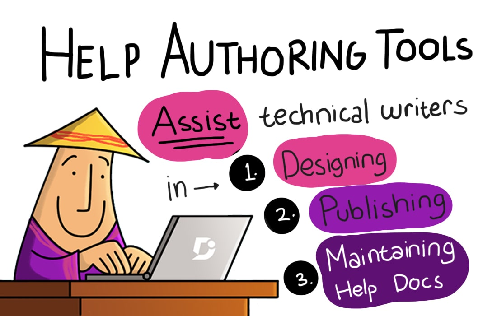

Tools
Using the right tools for technical writing makes the life of a technical writer easy. There are a lot of different tools available for variable purposes — authoring, publishing, screen captures, drawing, image manipulation, and more.
Programs used during the course
- Jira
- Confluence
- Snagit
- Camtasia
- Brackets
- Visual Studio Code
- GitHub Desktop
- MadCap Flare
- Oxygen
https://www.oxygenxml.com/xml_editor/download_oxygenxml_editor.html
- memoQ